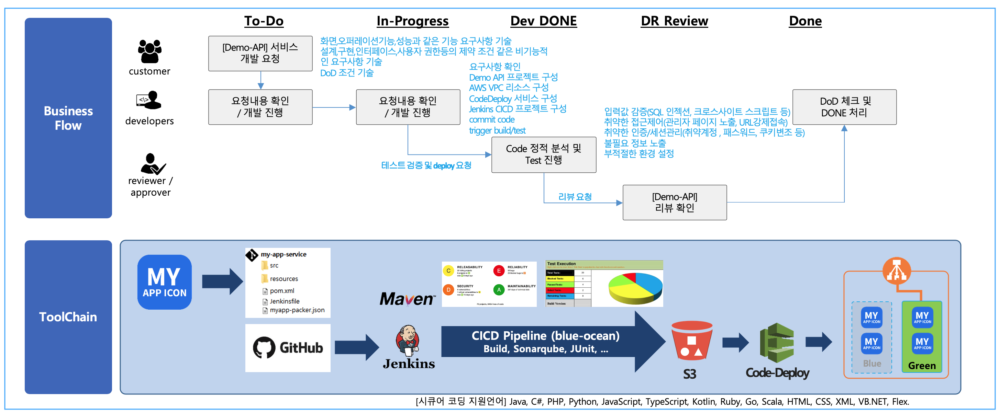
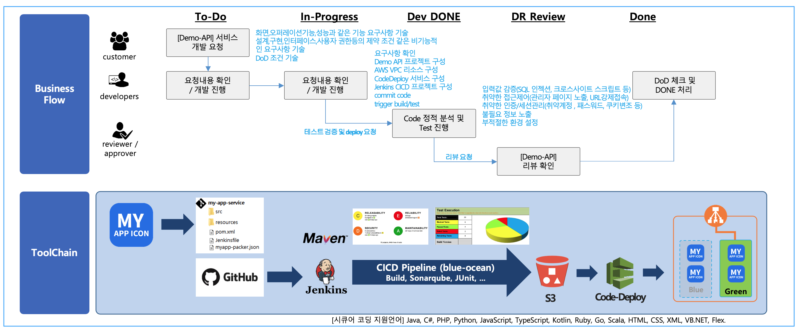

Demo frontend Application CICD 툴체인 아키텍처
Demo frontend Application 출시를 위해 DevOps 팀의 비즈니스 프로세스 흐름과, Toolchain을 통한 blue/green 배포 흐름의 예시 입니다.

Toolchain의 자동화와 GitOps 정책을 통해 상품 서비스 출시가 빠르고 자동화 될 수 있습니다.
Demo frontend Application 출시를 위해 DevOps 팀의 비즈니스 프로세스 흐름과, Toolchain을 통한 blue/green 배포 흐름의 예시 입니다.

Toolchain의 자동화와 GitOps 정책을 통해 상품 서비스 출시가 빠르고 자동화 될 수 있습니다.